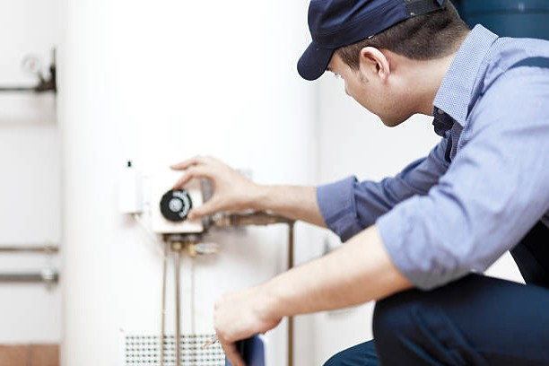

Boiler repair companies are an important service, especially during the winter season. While heating is crucial for most homes, it is vital for keeping your family warm during cold days. While this is important, many people in Australia tend not to know how to repair their boilers. This blog will look at what boiler service and what boiler service includes.
Boiler service is a type of test that one can employ to ensure the boiler is functioning in optimal condition. A boiler service check involves tests on the gas, valves and flues on your boiler system. It is important to note that while performing these kinds of tests a Gas Safe engineer makes sure to familiarize himself with the specifics regarding combustion output or energy efficiency to make any necessary modifications necessary while sprucing up or cleaning up your boiler system.
Your boiler is like a car. It should be serviced regularly to ensure optimal efficiency and performance between service calls or breakdowns. Your manufacturer will tell you when you should have your boiler serviced and remind you in your boiler's user manual of the importance of this regular service checkup.
Therefore, if you want your boiler to keep working like new, it's binding upon you as the owner of a new boiler to get it serviced annually by your manufacturer's recommendations.

Visual Inspection: Before moving forward, it's important to find a Gas Safe Registered engineer who will conduct maintenance and inspection services on your boiler. This person will ensure that your boiler is working safely and efficiently.
During the visual inspection, an engineer can examine the boiler's flame. If they notice it's emitting rusty smoke or letting off sparks, this is probably a sign that it is time for the boiler to be replaced.
Removal of the Casing: Once the gas safety engineer has looked over your boiler, he will take it apart piece by piece so that he can inspect every component as needed. When you go to remove your boiler’s casing, you should ask your engineer to look at a few key areas before you do to avoid any damage or unnecessary repairs. These areas may include the components mentioned above such as the heat exchanger, main injector, burner and spark probe.
Flue Check: Having professionals conduct a chimney sweep or cylinder check will help to remove obstructions and make sure your fireplace is operating perfectly. Thanks to periodic servicing, you can also be sure that your flue is safely fitted and no chimney fires are being produced as a result of carbon monoxide emissions.
Gas Pressure Check: A boiler runs with the help of gas pressure, thus the boiler should have optimum gas pressure at all times. If it doesn’t then the water in your taps and radiators will not heat up to the level that it should.
Boiler Fired Up: The checker allows the engineer to see if there are any faults with the boiler.
Issuance of Report: After an engineer has thoroughly analyzed the boiler and conducted all necessary tests, he will write a report with you. This report will inform you of any problems that have arisen throughout testing (if any). The report will also help to guide you on how to maintain your boiler so that it operates efficiently and effectively.
Boiler Service is comprehensive and covers both minor and major boiler repairs. The experienced engineers are trained in repairing all boiler brands and models, so whatever your boiler, they can help. They have a large workshop and stock all common parts, ensuring that any boiler breakdowns they have to fix are dealt with quickly and efficiently.